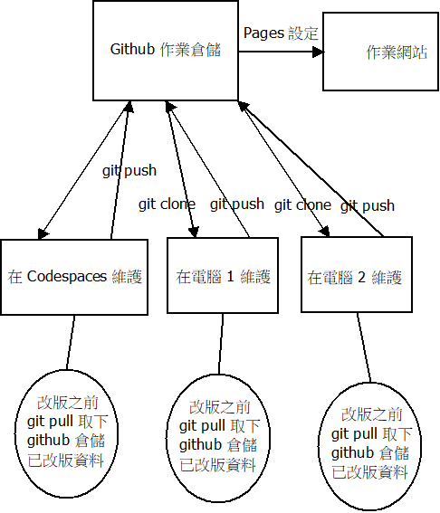

Repository <<
Previous Next >> Codespaces
Topic 1
基於瀏覽器的分散式版次管理與整合程式開發環境 (10%)

github_multi_site_version_control_dia.7z
USB 隨身碟:
下載 python_2025_lite.7z (428 MB, 解開壓縮後約 1.5 GB)
Jupyter
What are Github and Codespaces?
Hello World - GitHub Docs
利用包含學號的字串作為帳號, 申請免費使用 Github.
Python 課程教材: https://www.learnpythonwithjupyter.com/ - PART 1
參考資料:
https://www.youtube.com/@-kmolab9376/videos
討論:
目前的作業倉儲編輯程式, 使用 https adhoc 動態授權, 請深入了解若改用靜態 https 授權, 執行速度會快多少?
透過 ChatGPT 提問: 大約縮短 20%-50% 執行時間
將 cmsimde\wsgi.py 中的 adhoc https 改為靜態檔案授權:
#flaskapp.app.run(host=ip, port=port, debug=True, ssl_context="adhoc")
flaskapp.app.run(host=ip, port=port, debug=True, ssl_context=('cert.pem', 'key.pem'))
必須在倉儲根目錄提供 cert.pem 與 key.pem:
openssl req -newkey rsa:2048 -new -nodes -x509 -days 3650 -keyout key.pem -out cert.pem
使用 USB 隨身碟執行作業倉儲內容改版的速度, 與直接利用 C:\ 固態硬碟執行的速度差多少? 假如可攜程式系統希望儘量使用 C:\ 固態硬碟執行, 但需要作業倉儲與其他必須自行帶著的資料放入 USB 隨身碟, 該如何進行?
透過 ChatGPt 提問: 固態硬碟執行速度可能快 USB 3.0 隨身碟快 3-10 倍.
有關如何利用電腦輔助設計室中電腦固態硬碟提升執行速度, 請參考: https://mde.tw/cp2024/content/cmsimde.html 中的說明.
Repository <<
Previous Next >> Codespaces